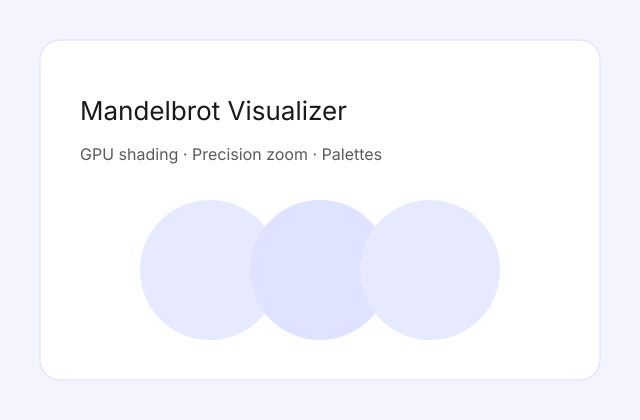

The visualizer supports deep zoom, palette editing, and smooth navigation with a focus on keeping frames stable even at high magnification levels.
I implemented a custom shader pipeline, dynamic color maps, and a profiling overlay to tune GPU workloads.
View on GitHub